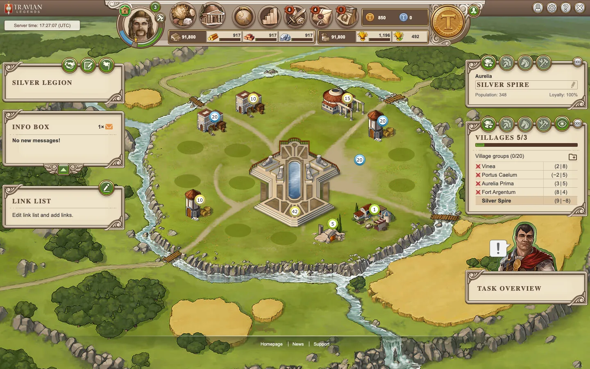
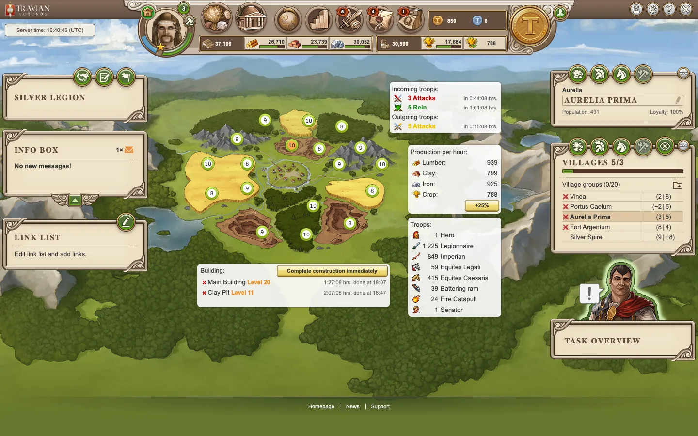

Six tribes
Romans, Teutons, Gauls, Egyptians, Huns and Spartans, each with its own troops and buildings.
Self-hosted · MIT · Docker
Build villages, raise armies, raid farms and run an alliance. OpenTravian ships as multi-arch Docker images: play alone in fifteen minutes, or host a world for your friends.

Captured from a local world seeded with three alliances, Natar farms and a Wonder in progress.

Romans, Teutons, Gauls, Egyptians, Huns and Spartans, each with its own troops and buildings.
Pick a world speed from the classic 1× to as fast as you like. Stop the stack and time in the world stands still.
Seed up to a thousand computer-owned villages on the map so a solo world never runs out of targets.
Docker Compose brings up the game, database and cache. Images are published for amd64 and arm64.
HTTPS with Caddy or your own proxy, scheduled backups, health checks and upgrade paths are documented.
Export a locale to CSV or PO, edit it in any tool, and import it back into its catalogue.
You need Docker and about 2 GB of free memory. The first start builds the game and creates the world.
Then open http://localhost:8080 and sign in. The step-by-step guide covers choosing your name, tribe and speed without the setup wizard.
# get the code
git clone https://github.com/vakesz/OpenTravian.git
cd OpenTravian
# generate .env with fresh secrets
sh config/bootstrap-env.sh
# build and start the world
COMPOSE_FILE=compose.yaml:compose.build.yaml \
docker compose up -d --build --wait
# finish setup in the browser
open http://localhost:8080/setup/